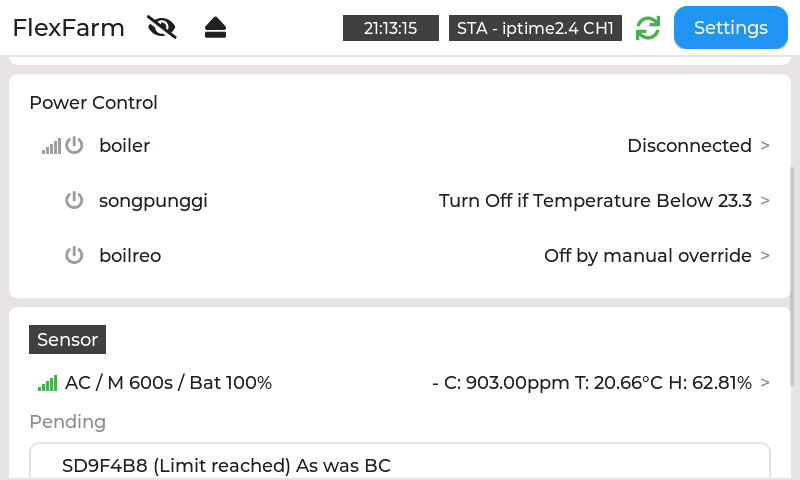
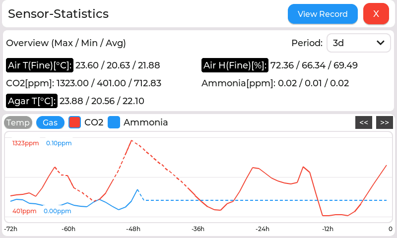

FLEXFARM
농가에 여유를 심다
손길은 가볍게, 관리는 정밀하게.
입상부터 폐상까지, 하루 내내 FlexFarm이 살핍니다.
측정기와 카메라는 걸기만 하세요.
측정기와 카메라는 걸기만 하세요.
2026년 11월
언제 무슨 일이 생길지 모르니 재배사를 떠나기 어렵습니다.
무슨 일이 생겼는지 확인하려면 직접 재배사에 가야 합니다.
상황을 알아도 설비를 조작하려면 다시 현장으로 가야 합니다.
고온 고습을 견디지 못하는 장치 때문에, 비좁은 재배사 안의 전선과 급수 호스 사이에서 작업합니다.
선 없이 원하는 곳에 둡니다. 최대 3개월 이상 충전 없이 씁니다(계산값, 실측 전).
콘센트가 가까우면 꽂아 두고 충전 걱정 없이 씁니다.
충전이 필요 없는 교체형 전지를 씁니다.
중앙제어기가 모든 측정기와 카메라의 잔량을 모아 보여 주고, 휴대폰에서도 봅니다.
 양송이
양송이 신령버섯
신령버섯 표고
표고생육 환경의 기본입니다. 정밀 측정기와 보급형 측정기 가운데 골라 답니다.
환기를 판단합니다. 일부러 높여 생육 속도와 버섯 모양을 조절하고 수확 시기를 맞출 때도 씁니다.
초기 배지 상태를 확인합니다. 1차 발효가 잘못됐거나 2차 발효가 덜 된 배지에서는 높은 수치로 검출됩니다.
고온용 측정기로 뜨겁고 습한 배지의 온도를 잽니다.
정한 간격으로 찍어 생육을 눈으로 확인합니다.
사진: Мыць Денис (Public domain); Wynand Uys (CC BY 4.0); frankenstoen (CC BY 2.0). 모두 Wikimedia Commons, 크기 조정. 실제 재배 사진으로 교체 예정.
데이터 선 없이 무선으로 연결합니다.
주요 장치를 습한 공간 밖에 둡니다.
고온용 장치를 함께 제공합니다.

주화면 · 설비 상태, 현재 측정값, 신호, 배터리

그래프 · 1시간에서 1주일까지, 측정이 빠진 구간은 점선으로 표시


앱 설치 없이 홈 화면에서 바로 엽니다.
바뀐 내용이 바로 화면에 들어옵니다.
현장 사진을 보고, 설비를 켜고 끕니다.
문제가 생기면 알림을 받고 바로 확인합니다.
정한 간격으로 자동 촬영
휴대폰에서 바로 촬영
촬영할 때만 조명을 켬
사진을 날짜별로 보관하고 열람
AI 학습에 필요한 촬영 프로파일
자동 주기 촬영
기기 내 보존과 학습 장치로 전달
버섯의 변화를 AI가 알아채, 수확과 병해, 환경 이상을 미리 알려 줍니다.
시작 작물 · 양송이로 학습 데이터를 축적하고 있습니다.
AI 기능은 개발 계획이며, 현재 제공되는 기능이 아닙니다.
원격으로 바로 켜고 끕니다. 정한 시간 뒤 자동으로 풀어 깜빡 잊어도 괜찮습니다.
켜기와 끄기를 반복하고, 낮과 밤을 나눠 설정합니다.
켜는 기준과 끄는 기준만 정하면 추세까지 보고 자동으로 판단합니다.
기준 측정값, 추세, 최소 유지 시간까지 직접 정해 세밀하게 맞춥니다.
인터넷이 끊겨도 중앙제어기가 현장에서 자동 제어와 화면을 이어 갑니다.
원격 보일러 제어와 끊기면 그대로 두다가, 정한 시간(10분, 30분, 1시간) 뒤 스스로 끕니다.
기준 측정기가 5분 넘게 끊기면 그 설비를 끕니다. 잠깐의 끊김은 무시합니다.
끊김은 기록과 휴대폰 알림으로 알려 줍니다(알림에는 인터넷이 필요합니다).
통신이 실패하면 다시 보냅니다. 사진이 실패하면 다시 받고, 다시 찍습니다. 통신 장치가 멈추면 다시 시작합니다.
최근 기록은 내부에 먼저 남깁니다. SD 카드는 두 곳에 나눠 보관하고, 이상이 생기면 알리고 보호합니다.
연결 끊김, 배터리, SD 카드, 설비 제어 동작, 에러와 경고를 알립니다. 종류별로 켜고 끕니다.
통신, 촬영, 저장 장치처럼 문제의 종류를 코드로 나눠 알려 줍니다. 무엇을 확인해야 할지 바로 알 수 있어 헛걸음을 줄입니다.
| 측정 | 공기 온도·습도(정밀·보급형), CO2, 암모니아, 배지 접촉 온도, 사진 |
|---|---|
| 연결 대수 | 고온용 측정기 2대(대당 기후 1, 배지 2), 카메라 2, 정밀 공기 1, 간이 공기 1, 이산화탄소 1, 암모니아 1 |
| 측정 주기 | 1분, 10분, 30분, 1시간 중 선택. 응답 주기는 따로 선택(짧을수록 빠르고, 길수록 배터리가 오래갑니다). 조작하는 동안에는 바로 반응합니다. |
| 전력 제어 | 10A(2kW) 제어 2회로, 원격 보일러 제어 1회로. 강제, 타이머, 측정값 AI, 측정값 수동 |
| 화면 | 4.3인치 터치 화면, 아이폰·갤럭시·PC 웹앱(앱 설치 없음), 한국어·영어 |
| 알림 | 휴대폰 푸시 알림, 기록 최근 500건 |
| 기록 | 내부 저장소와 SD 카드, 그래프 1시간~1주, 웹 백업·복원 |
| 전원 | 충전 배터리와 USB 충전기 두 가지 전원으로 동작합니다. 고온용 측정기는 충전이 필요 없는 교체형 전지를 씁니다. 장치와 설정에 따라 충전이나 교체 없이 최대 3개월 이상 사용할 수 있습니다(계산값, 실측 전). |
| 구분 | 품목 | 하는 일 | 대수 | 공급 가격 |
|---|---|---|---|---|
| 기본 | 중앙제어기 | 터치 화면, 판단, 기록, 설비 제어(10A 2회로), 인터넷 연결 | 1 | 1,500만 원 |
| 무선확장기(재배사용) | 재배사 안 측정기·카메라와 무선 연결 | 1 | ||
| 배지 및 기후 측정기(정밀) | 65도까지 견딤. 대기 온습도와 배지 온도 2곳 | 1 | ||
| 옵션 | 배지 및 기후 측정기(정밀) | 측정 위치 1곳 추가 | 1대 추가 | 100만 원 |
| 이산화탄소 및 온습도 측정기 | 이산화탄소 농도와 공기 온습도 | 1 | 50만 원 | |
| 카메라 | 생육 사진(주기 촬영, 원격 촬영) | 최대 2 | 대당 50만 원 | |
| 암모니아 측정기 | 암모니아 농도 | 1 | 50만 원 | |
| 원격 제어 | 원격 제어기 + 원격제어기용 무선확장기. 보일러를 무선으로 켜고 끔 | 1조 | 50만 원 | |
| 확장 | 무선확장기 | 공간이 늘 때 이어 붙임 | 필요한 만큼 | 별도 협의 |
공급 가격은 부가세 별도, 설치비 별도입니다.
원격으로 보고 조작하려면 재배사 밖에 Wi-Fi와 인터넷이 있어야 합니다. 인터넷이 끊겨도 현장 화면은 쓸 수 있습니다.
내부안테나가 재배사 벽을 지나는 통로를 확인합니다.
제어할 팬, 가습기, 건조기, 보일러의 전력과 위치를 확인합니다. 원격 보일러 제어는 보일러 기종에 따라 지원 여부를 확인합니다.
환경 관리용 제품입니다. 안전 경보 장비를 대체하지 않습니다.